2019年北京市中考化学真题 原卷解析
北京市2019年高级中等学校招生考试（中考）化学试卷
考生须知
1.本试卷共6页，共两部分，24道小题，满分45分，考试时间：与生物合计90分钟。 2.在试卷和草稿纸上准确填写姓名、准考证号、考场号和座位号。 3.试题答案一律填涂或书写在答题卡上，在试卷上作答无效。 4.在答题卡上，选择题用2B铅笔作答，其他试题用黑色字迹签字笔作答。 5.考试结束，请将本试卷、答题卡和草稿纸一并交回。 |
可能用到的相对原子质量:H 1 C 12 O 16
第一部分选择题（共12分）每小题1分。在每小题列出的四个选项中，选出符合题目要求的一项。
1. 空气成分中，体积分数最大的是（ ）
A. 氮气B. 二氧化碳C. 氧气D. 稀有气体
【答案】A
【解析】
【详解】空气的成分按体积计算，大约是：氮气占78%、氧气占21%、稀有气体占0.94%、二氧化碳占0.03%、其它气体和杂质占0.03%。
2. 下列属于非金属元素的是（ ）
A. MgB. ZnC. ClD. Ag
【答案】C
【解析】
【分析】一般来说，元素名称中带“金”字旁的为金属元素（汞和金除外），其他为非金属元素
【详解】A、Mg的元素名称为镁元素，属于金属元素，故不符合题意；
B、Zn的元素名称为锌元素，属于金属元素，故不符合题意；
C、Cl的元素名称为氯元素，属于非金属元素，故符合题意；
D、Ag的元素名称为银元素，属于金属元素，故不符合题意。
3. 生活中一些食物的近似pH如下，其中显碱性的食物是( )
A. 柠檬汁(2.0～3.0)B. 苹果汁(2.9～3.3)
C. 牛奶(6.3～6.6)D. 鸡蛋清(7.6～8.0)
【答案】D
【解析】
【详解】溶液的pH小于7，溶液呈酸性，pH越小，酸性越强；溶液的pH大于7，溶液呈碱性，pH越大碱性越强；pH等于7，溶液呈中性。A. 柠檬汁(2.0～3.0) ，呈酸性； B. 苹果汁(2.9～3.3) ，呈酸性；C. 牛奶 (6.3～6.6) ，呈酸性； D. 鸡蛋清(7.6～8.0) ，呈碱性；选D
4. 下列物质在氧气中燃烧，火星四射、生成黑色固体的是（ ）
A. 铁丝B. 红磷C. 甲烷D. 氢气
【答案】A
【解析】
【详解】A、铁丝在氧气中燃烧，火星四射、生成黑色固体，故符合题意；
B、红磷在氧气中燃烧，冒出大量白烟，放出大量热，故不符合题意；
C、甲烷在氧气中燃烧，发出淡蓝色火焰，放出大量热，故不符合题意；
D、氢气在氧气中燃烧，发出淡蓝色火焰，放出大量热，故不符合题意。
5. 下列操作不正确的是（ ）
A.  加热液体B.
加热液体B.  稀释浓硫酸
稀释浓硫酸
C.  取固体粉末D.
取固体粉末D.  检查气密性
检查气密性
【答案】B
【解析】
【详解】A、加热液体时，用酒精灯外焰加热，试管夹夹在试管中上部，试管中液体不超过试管容积的1/3，操作正确，故不符合题意；
B、稀释浓硫酸时，要将浓硫酸慢慢注入水中，并不断搅拌，操作错误，故符合题意；
C、取固体粉末时，将试管平拿，用药匙或纸槽，把固体粉末送到试管底部，慢慢竖起，操作正确，故不符合题意；
D、检查气密性时，用双手捂住试管，将导管伸入水中，观察导管口是否有气泡产生，操作正确，故不符合题意。
6. 下列物质含有氢分子的是（ ）
A. H2B. H2O2C. H2CO3D. H2O
【答案】A
【解析】
【详解】A、H2是由氢分子构成的，故符合题意；
B、H2O2是由过氧化氢分子构成的，故不符合题意；
C、H2CO3是由碳酸分子构成，故不符合题意；
D、H2O是由水分子构成，故不符合题意
7. 下列物质的用途中，利用其物理性质的是（ ）
A. 铜用于制作导线B. 一氧化碳用于炼铁C. 天然气用作燃料D. 氧气用于气焊
【答案】A
【解析】
【详解】A、铜用于制作导线，利用其物理性质导电性，故符合题意；
B、一氧化碳用于炼铁，利用其化学性质还原性，故不符合题意；
C、天然气用作燃料，利用其化学性质可燃性，故不符合题意；
D、氧气用于气焊，利用其化学性质助燃性，故不符合题意。
8. 下列说法不正确的是（ ）
A. NaOH有腐蚀性B. H2O2能分解
C. H2O是常用的溶剂D. Al在常温下不能与O2反应
【答案】D
【解析】
【详解】A、NaOH有腐蚀性，故不符合题意；
B、H2O2在二氧化锰催化下能分解产生氧气，故不符合题意；
C、H2O是常用的溶剂，故不符合题意；
D、Al在常温下，其表面能形成致密的氧化物薄膜，故Al在常温下能与O2反应，符合题意。
9. 下列物质的化学式不正确的是（ ）
A. 干冰—CO2B. 消石灰—Ca(OH)2
C. 纯碱一NaOHD. 小苏打一NaHCO3
【答案】C
【解析】
【详解】A、干冰的化学式为CO2，正确，故不符合题意；
B、消石灰的化学式为Ca(OH)2，正确，故不符合题意；
C、纯碱的化学式为Na2CO3，错误，故符合题意；
D、小苏打的化学式为NaHCO3，正确，故不符合题意。
10. 下列关于CO2的实验室制法及性质实验的说法不正确的是（ ）
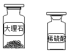 | 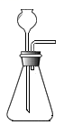 | 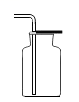 | 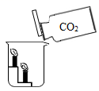 |
A、制CO2的药品 | B、发生装置 | C、收集装置 | D、比较CO2与空气的密度 |
A. AB. BC. CD. D
【答案】A
【解析】
【详解】A、实验室制取二氧化碳的药品是：稀盐酸和大理石，故符合题意；
B、实验室制取二氧化碳的发生装置是固液不加热型装置，故不符合题意；
C、二氧化碳密度比空气大，故用向上排空气法收集二氧化碳，故不符合题意；
D、二氧化碳密度比空气大，可以像倒水一样倾倒二氧化碳，故不符合题意。
11. 用下图装置进行实验。升温至60℃的过程中，仅①燃烧；继续升温至260℃的过程中，仅③燃烧。下列分析不正确的是（ ）

A. ①燃烧，说明白磷是可燃物
B. 对比①③，可说明红磷的着火点比白磷的高
C. 对比②③，可验证燃烧需可燃物与氧气接触
D. ④未燃烧，说明无烟煤不是可燃物
【答案】D
【解析】
【详解】A、①燃烧，说明白磷是可燃物，故不符合题意；
B、由题干文字可得：升温至60℃的过程中，仅①燃烧；继续升温至260℃的过程中，仅③燃烧，说明红磷的着火点比白磷的高，故不符合题意；
C、升温至260℃的过程中，②中红磷被沙土覆盖，与氧气隔绝，不燃烧，③中红磷与空气中氧气接触，燃烧，对比②③，可验证燃烧需可燃物与氧气接触，故不符合题意；
D、④未燃烧，说明温度未达到无烟煤的着火点，故符合题意。
12. 丙烷（C3H8）是液化石油气的主要成分之一，燃烧前后分子种类变化的微观示意图如下。下列说法正确的是（ ）

A. 甲中碳、氢元素质量比为3:8B. 乙和丙的元素组成相同
C. 44g甲完全燃烧至少需160g乙D. 生成的丙与丁的分子个数比为1:1
【答案】C
【解析】
【分析】由图可知，该化学反应的一般表达式为： ，配平后的化学方程式为：
，配平后的化学方程式为： ，依据化学方程式和题干中的信息，进行解答。
，依据化学方程式和题干中的信息，进行解答。
【详解】A、由图可得，甲的化学式为C3H8，碳、氢元素质量比为12×3:1ⅹ8=9:2，故不符合题意；
B、由化学方程式可得，乙和丙的元素组成不相同，故不符合题意；
C、解：设44g甲完全燃烧至少需要乙的质量为x

故符合题意；
D、由化学方程式可得，生成的丙与丁的分子个数比为3:4，故不符合题意。
第二部分非选择题(共33分)每空1分。
【生活现象解释】
13. 人人行动，推进垃圾分类，推动绿色发展。矿泉水瓶、旧报纸_____________（填“能”或“不能”）投入有下图标识的垃圾箱中。
【答案】能
【解析】
【详解】矿泉水瓶、旧报纸属于可回收垃圾，故填写：能；
14. 84消毒液[有效成分为次氯酸钠（NaClO）]和二氧化氯（ClO2）是常用消毒剂。
（1）NaClO中氯元素的化合价为_____。
（2）ClO2属于____________（填序号）。
A 混合物 B 化合物 C 氧化物
【答案】 ①. +1 ②. BC
【解析】
【详解】(1) NaClO中钠元素的化合价为：+1，氧元素的化合价为：-2，若氯元素的化合价为：x，则根据化合物中正负化合价为零原则可得：(+1)+x+(-2)=0，x=+1,故填写：+1；
(2) ClO2是由氯元素和氧元素组成的纯净物，因为其中一种元素为氧元素，故属于化合物中的氧化物，填写：BC。
15. 氢气是理想的清洁、高能燃料。水分解可获得氢气和氧气。
（1）下图中，产生氢气的试管是______（填“1”或“2”）。
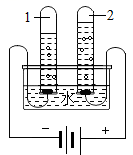
（2）我国开发出一种新型催化剂，实现了在光照下分解水，反应的化学方程式为_____________。
【答案】 ①. 1 ②. 2H2O2
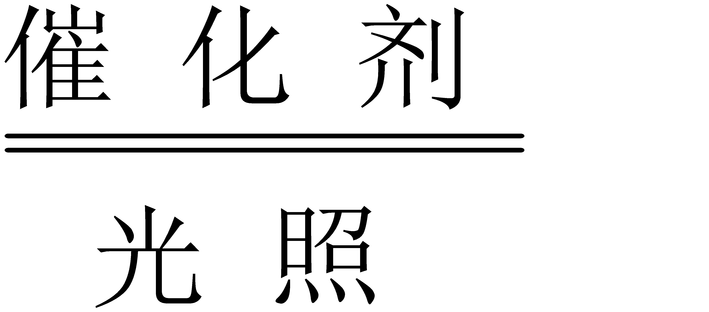
2H2↑+O2↑【解析】
【详解】(1)由图可知，试管1与电源负极相连，产生气体比试管2多，为氢气，故填写：1；
(2) 光照下分解水生成氢气和氧气，化学方程式为：2H2O22H2↑+O2↑。
【科普阅读理解】
16. 阅读下面科普短文。
土豆是继水稻、小麦、玉米之后的第四大粮食作物，含淀粉、蛋白质、维生素C等多种营养物质，是餐桌上的美味食材。
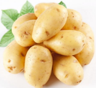
表1鲜土豆中主要营养物质的含量（每100g）
蛋白质/g | 脂肪/g | 淀粉/g | 钙/mg | 磷/mg | 维生素C/mg |
1.5-2.3 | 0.4-0.94 | 17.5-28.0 | 11-60 | 15-68 | 20-40 |
土豆切开后发生褐变，用水浸泡能防止褐变，但会引起营养物质流失。用土豆片进行实验，测得其食用品质、淀粉含量和维生素C含量随浸泡时间的变化如下:
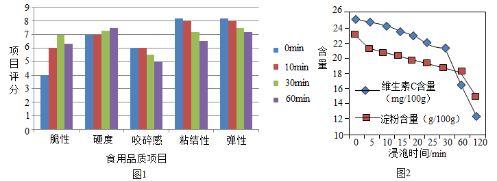
土豆变绿、发芽时，龙葵素含量显著增高，而龙葵素多食可导致中毒，就算是把变绿、发芽的部位削掉，也不宜食用。除食用外，土豆还可以作为原料广泛用于医药、化工、纺织、造纸等工业中。
依据文章内容回答下列问题。
（1）表1中的“钙”指的是______________（填“元素”或“原子”）。
（2）由图1可知：60min内，_________（填序号，下同）。
A浸泡30min比10min脆性分值高
B浸泡10min，硬度、咬碎感均无明显变化
C随着浸泡时间的增加，粘结性、弹性分值均降低
（3）由图2可知：土豆片的淀粉含量与浸泡时间的关系是_______________________。
（4）变绿、发芽的土豆不宜食用，其原因是___________________________________。
（5）下列说法正确的是_____________。
A土豆是四大粮食作物之一B土豆中维生素C含量最高
C用水泡可防止土豆片褐变D土豆开发应用的前景广阔
【答案】 ①. 元素 ②. ABC ③. 在其他条件相同时，在研究范围内，土豆片的淀粉含量随浸泡时间的延长而降低 ④. 土豆变绿、发芽时，龙葵素含量显著增高，而龙葵素多食可导致中毒 ⑤. ACD
【解析】
【详解】(1)一般情况下，没有特别说明，表1中“钙”、“磷”是指元素，故此空填写：元素；
(2)A、由图1可知：60min内，浸泡30min比10min脆性分值高，故符合题意；
B、浸泡10min，硬度、咬碎感跟0min比，均无明显变化，故符合题意；
C、由图1可知：60min内，随着浸泡时间的增加，粘结性、弹性分值均降低，故符合题意。
(3)由图2可知，随横坐标数值的增加，曲线的纵坐标在逐渐减少，故填写：在其他条件相同时，在研究范围内，土豆片的淀粉含量随浸泡时间的延长而降低；
(4)由题干文字可知，变绿、发芽的土豆不宜食用，其原因是土豆变绿、发芽时，龙葵素含量显著增高，而龙葵素多食可导致中毒；
(5)A、由题干文字可知，土豆是四大粮食作物之一，故符合题意；
B、由表1可知，土豆中维生素C含量不是最高，“磷”和“钙”的含量有可能比它高，故不符合题意；
C、由题干文字可知，用水泡可防止土豆片褐变，故符合题意；
D、由题干文字可知，土豆开发应用的前景广阔，故符合题意。
【生产实际分析】
17. 利用生锈废铁屑和钛白废酸（含硫酸、硫酸亚铁）制备硫酸亚铁的主要转化过程如下
（1）Ⅰ中除铁锈的化学方程式为 __________________________________________ 。
（2）Ⅱ中反应属于基本反应类型中的 _______________________________________ 。
【答案】 ①. Fe2O3+6HCl=2FeCl3+3H2O ②. 置换反应
【解析】
【详解】(1) 生锈废铁屑与稀盐酸反应除铁锈的化学方程式为：Fe2O3+6HCl=2FeCl3+3H2O；
(2)铁屑与稀硫酸反应生成硫酸亚铁和氢气，属于置换反应，故填写：置换反应。
18. 利用电石渣[主要成分为Ca(OH)2、MgO]制备硫酸钙 主要工艺流程如下：
主要工艺流程如下：
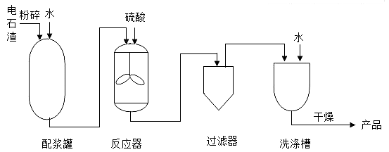
己知：MgO难溶于水；MgSO4易溶于水；CaSO4微溶于水。
（1）反应器中搅拌的目的是__________________________________________________。
（2）反应器中发生的反应主要有MgO+H2SO4=MgSO4+H2O和____________________。
（3）上述流程中，用于分离提纯的设备有______________________________________。
【答案】 ①. 使反应物充分接触，加快反应速率，反应更充分 ②. Ca(OH)2+H2SO4=CaSO4+2H2O ③. 过滤器和洗涤槽
【解析】
【详解】(1) 反应器中搅拌的目的是使反应物充分接触，加快反应速率，反应更充分；
(2) 反应器中发生的主要反应除了氧化镁和稀硫酸外，还有氢氧化钙和稀硫酸反应生成微溶物硫酸钙和水，化学方程式为：Ca(OH)2+H2SO4=CaSO4+2H2O；
(3)由图可知，用于分离提纯的设备有过滤器和洗涤槽。
【基本实验及其原理分析】
19. 用下图装置进行实验，挤出浓盐酸。
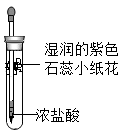
（1）实验现象是______________________________________________。
（2）该实验说明分子具有的性质是__________________________。
【答案】 ①. 湿润紫色石蕊小花变红 ②. 分子在不断运动
【解析】
【分析】浓盐酸是由氯化氢和水组成混合物，浓盐酸具有挥发性，挥发出氯化氢。
【详解】(1) 由分析可知，浓盐酸挥发出的氯化氢，与水结合为盐酸，显酸性，可以使湿润的紫色石蕊小花变红 ，故填写：湿润的紫色石蕊小花变红；
(2) 由分析可得，湿润的紫色石蕊小花变红的微观解释是：挥发出氯化氢，是由氯化氢分子构成的，氯化氢分子的不断运动，使湿润的紫色石蕊中的水分子，与氯化氢分子结合，显酸性，使纸花变红，故该实验说明分子具有的性质是分子在不断运动。
20. 用下图装置进行实验。
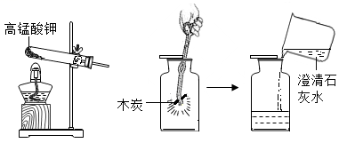
（1）高锰酸钾分解的化学方程式为_________________________________________________。
（2）能说明木炭在氧气中燃烧的产物为二氧化碳的现象是____________________________。
【答案】 ①. 2KMnO4K2MnO4 +MnO2+O2↑ ②. 澄清石灰水变浑浊
【解析】
【详解】(1) 高锰酸钾分解产生锰酸钾、二氧化锰和氧气，化学方程式为：
2KMnO4K2MnO4 +MnO2+O2↑；
(2)检验二氧化碳用澄清石灰水，故能说明木炭在氧气中燃烧的产物为二氧化碳的现象是澄清石灰水变浑浊。
21. 用粗木棍在涂有蜡的锌板上写“明”“和”两个字，露出下面的锌板。向“明”字上滴加CuSO4溶液，向“和”字上滴加盐酸。
（1）“明”字上的现象是_______________________________。
（2）“和”字上产生气泡，用化学方程式解释：_________________________________。
【答案】 ①. “明”字位置逐渐出现红色固体，溶液由蓝色变为无色 ②. Zn+2HCl=ZnCl2+H2↑
【解析】
【详解】(1)锌与硫酸铜反应生成铜与硫酸锌，产生现象是：有红色固体出现，溶液由蓝色变为无色，故填写：“明”字位置逐渐出现红色固体，溶液由蓝色变为无色；
(2)由题干可知，“和”字上产生气泡，是因为锌板遇上了稀盐酸反应产生了氯化锌和氢气，化学方程式为：Zn+2HCl=ZnCl2+H2↑。
22. 用图1装置进行实验，先后将溶液快速全部推入，测得一段时间内压强变化如图2所示。
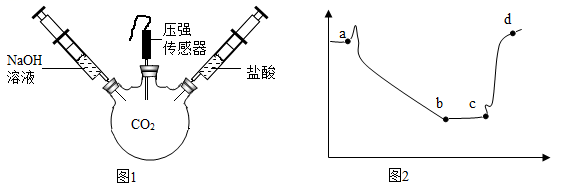
（1）先推入的溶液是____________________________________。
（2）bc段压强不变，原因是______________________________。
（3）cd段压强变大，用化学方程式解释：________________________________________________。
【答案】 ①. NaOH溶液 ②. 氢氧化钠溶液与二氧化碳充分反应，反应停止 ③. 2HCl+Na2CO3=2NaCl+H2O+CO2↑
【解析】
【详解】(1)由图2可知，曲线开始阶段，是有一段下降趋势的，原因是NaOH溶液与容器中的CO2反应了，而产物中有无气体生成，容器内压强会减小，故填写：NaOH溶液；
(2) bc段压强不变，原因是氢氧化钠溶液与二氧化碳充分反应，反应停止；
(3) cd段压强变大，是因为加进去的盐酸和前一个反应的产物发生了反应，重新生成了气体，使容器内压强增大，用化学方程式表示为：2HCl+Na2CO3=2NaCl+H2O+CO2↑。
23. 请从A~D中任选三个作答，若均作答，按前三个计分。如下图所示，在一只烧杯中进行实验。补全实验方案
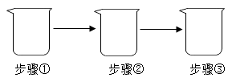
序号 | 目的 | 步骤 |
A | 探究_______________ | 加入NaOH溶液；②滴加酚酞溶液；③加入适量盐酸 |
B | 检验NaCl中混有Na2CO3 | 加入少量样品；②加入适量水至全部溶解；③加入__________ |
C | 验证KCl不能无限溶解 | 20°C时①加入100g水；②加入18gKCl；③加入___________（已知:20℃时，KCl的溶解度为34g) |
D | 配制________________ | ① 加入2.5gNaCl；②加入47.5g水；③搅拌至全部溶解 |
【答案】 ①. 盐酸能否与氢氧化钠溶液发生反应 ②. 稀盐酸或稀硫酸或氢氧化钙溶液或氯化钙溶液 ③. 超过16g的氯化钾（答案合理即可） ④. 50g溶质质量分数为5%的氯化钠溶液
【解析】
【详解】(1)由A的实验步骤可得，向NaOH溶液滴加酚酞溶液，酚酞溶液变红，再加稀盐酸，若溶液由红色变为无色， 证明盐酸能与氢氧化钠溶液发生反应，故填写：探究盐酸能否与氢氧化钠溶液发生反应；
(2)检验碳酸根离子可以用的方法有：向溶液中滴加稀盐酸或稀硫酸或氢氧化钙溶液或氯化钙溶液，故填写：稀盐酸或稀硫酸或氢氧化钙溶液或氯化钙溶液；
(3) 20℃时，KCl的溶解度为34g，溶液中已经溶解了18gKCl，再加入:34g-18g=16gKCl溶液就达到饱和，要想验证KCl不能无限溶解，加入的KCl超过16g就行，故填写：超过16g的氯化钾（答案合理即可）；
(4) 由D的实验步骤可得，该溶液质量为：2.5g+47.5g=50g，溶质质量分数为：
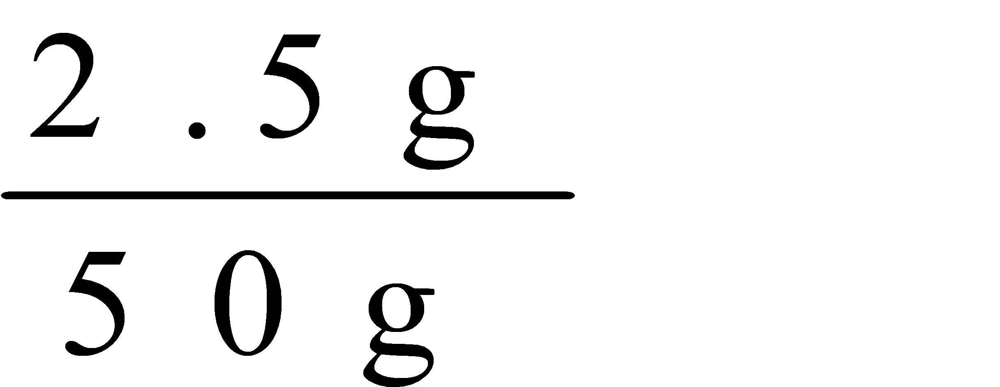
×100%=5%，故目的是配制50g溶质质量分数为5%的氯化钠溶液。【科学探究】
24. 下图“黑面包”实验中，蔗糖（C12H22O11）变黑，体积膨胀,变成疏松的炭，放出有刺激性气味的气体。
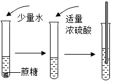
【提出问题】改变糖的种类、浓硫酸的体积、水的滴数和温度是否会影响实验效果呢?
【进行实验】分别取5g糖粉进行实验，根据前2min的现象对实验效果进行评分，
记录如下：
表1实验记录
实验 | 糖 | 浓硫酸体积/mL | 水的滴数 | 温度/℃ | 效果得分 |
1 | 蔗糖 | 4 | 5 | 22 | 65 |
2 | 蔗糖 | 5 | 10 | 30 | 81 |
3 | 蔗糖 | 6 | 15 | 50 | 93 |
4 | 冰糖 | 4 | 10 | 50 | 91 |
5 | 冰糖 | 5 | 15 | 22 | 88 |
6 | 冰糖 | a | 5 | 30 | 75 |
7 | 葡萄糖 | 4 | 15 | 30 | 0 |
8 | 葡萄糖 | 5 | 5 | 50 | 0 |
9 | 葡萄糖 | 6 | 10 | 22 | 0 |
【处理数据】分析表1，计算效果得分均值，结果如下：
表2效果得分均值
因素 | 糖 | 浓硫酸体积/mL | 水滴数 | 温度/℃ |
蔗糖 | 冰糖 | 葡萄糖 | 4 | 5 | 6 | 5 | 10 | 15 | 22 | 30 | 50 |
均值 | 79.7 | 84.7 | 0 | 52.0 | 56.3 | 56.0 | 46.7 | 57.3 | 60.3 | 51.0 | 52.0 | 61.3 |
依据均值推断最佳实验方案，均值越高，效果越好。
【解释与结论】
（1）蔗糖变成黑色的炭，发生了_____________（填“物理”或“化学”）变化。
（2）推测放出的气体含SO2，从元素守恒角度说明理由：________________________________。
（3）实验6中，a为_____________mL。
（4）根据表2推断，“黑面包”实验最好选择5g冰糖、5mL浓硫酸、_____滴水和50℃
【反思与评价】
（5）表2中，22℃对应的均值为51.0，计算该值所依据的3个数据分别是_____________________。
（6）综合分析，使实验3的效果得分高于实验4的因素有________________________________。
【答案】 ①. 化学 ②. 浓硫酸中有硫元素和氧元素，蔗糖中含有氧元素，则生成物中也会有硫元素和氧元素 ③. 6 ④. 15 ⑤. 65、88、0 ⑥. 浓硫酸的体积和水的滴数
【解析】
【详解】(1) 蔗糖的化学式为：C12H22O11，炭黑的化学式为：C，物质发生了变化，属于化学变化，故填写：化学；
(2)根据质量守恒定律的实质之一：化学反应前后，元素种类不变可得，浓硫酸中有硫元素和氧元素，蔗糖中含有氧元素，则生成物中也会有硫元素和氧元素；
(3)对比表1数据可得，糖为冰糖时，浓硫酸体积缺少6mL，故填写：6；
(4)分析表2可得，5g冰糖、5mL浓硫酸、15滴水和50℃时，数值同组最大，故填写：15；
(5) 表2中，22℃对应的均值为51.0，计算均值的方法是：
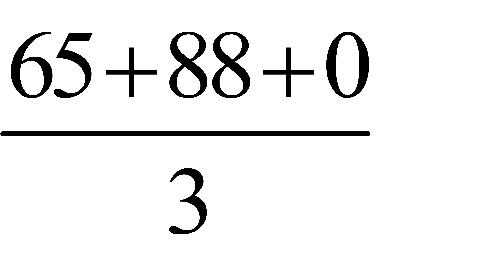
，故填写：65、88、0；(6)对比表1和表2数据可得，6mL浓硫酸比4mL效果要好，15滴水比10滴效果要好，故综合分析，使实验3的效果得分高于实验4的因素有浓硫酸的体积和水的滴数。
【点睛】该题为科学探究题，此题的解题关键是熟练掌握控制变量法。